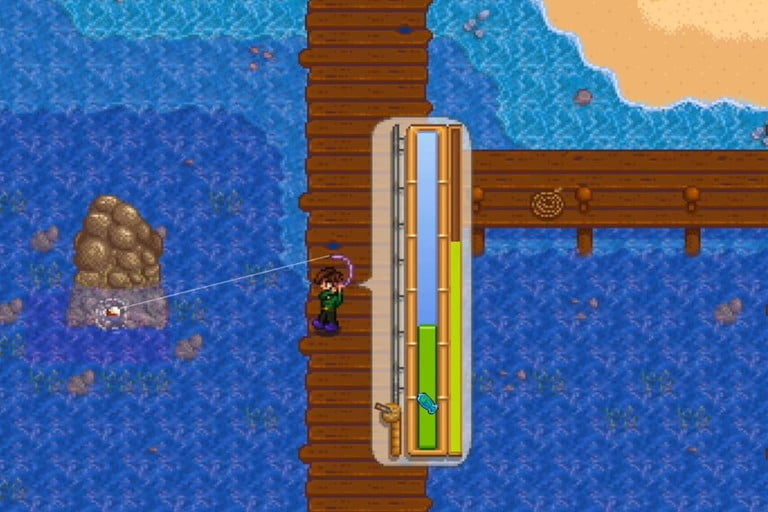

       <IDOCTYPE html>
       <html> 
       <head> 
       <title> Pesca </title>
       <link rel="stylesheet" href="css/stilo.css">
        <body style="background-color:#CCFFB5;">

      <div>
      <ul>
        <li><a href="index.html">Pagina Principal</a></li>
        <li><a href="personajes.html">Personajes</a></li>
        <li><a href="centro.html">Centro Cívico</a></li>
        <li><a href="mina.html">Mina</a></li>
        <li><a href="pesca.html">Pesca</a></li>
      </ul>
    </div>
      </head> 
      <body> 
      <header> 
         <div class="Titulo1">
      <h1> Pesca </h1> 
      </div>
      <div>
      
      </div>
      <div class="separarimg">
      <a> Es de las actividades mas aburridas del juego pero es la mas rentable en dinero en el early del juego. Este sistema funciona igual que la mayoria de juegos. Lanzas la caña y pescas al pez </a>
      </div>
      <h4> Peces </h4>
      
      
      <iframe width="420" height="315"
src="https://www.youtube.com/embed/lN4LBfRU7e8">
</iframe>
      
     <button onclick="topFunction()" id="myBtn" title="Go to top">Volver</button>
<script type="text/javascript" src="Javascript/java.js"></script>
      <footer>
      <h1> Diseñado por Loplord </h1> 

    